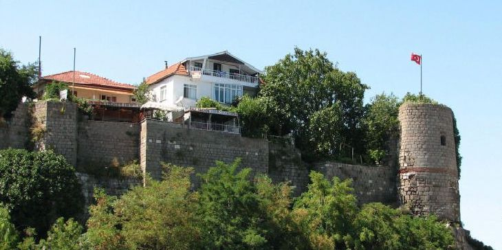

Amasra Kalesi, Bartın'ın Amasra ilçesindeki bir kale. Romalılar tarafından inşa edildi ve sonrasında sırasıyla Bizanslılar, Cenevizliler ve Osmanlılar tarafından restore edildi. Sormagir Kalesi ve Zindan Kalesi olmak üzere iki bölümden oluşmaktadır. UNESCO, 2013'te kaleyi Dünya Mirası Geçici Listesi'ne ekledi
